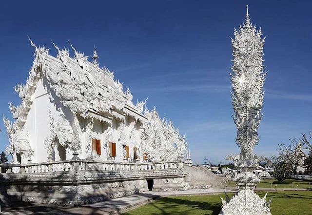
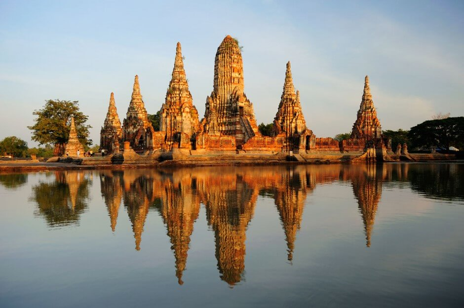
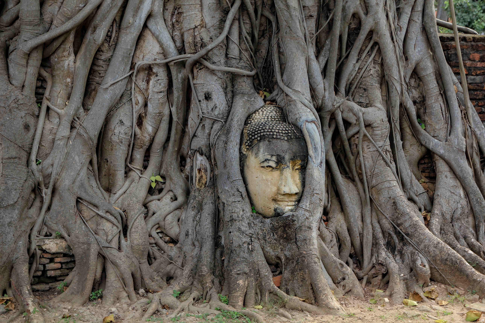
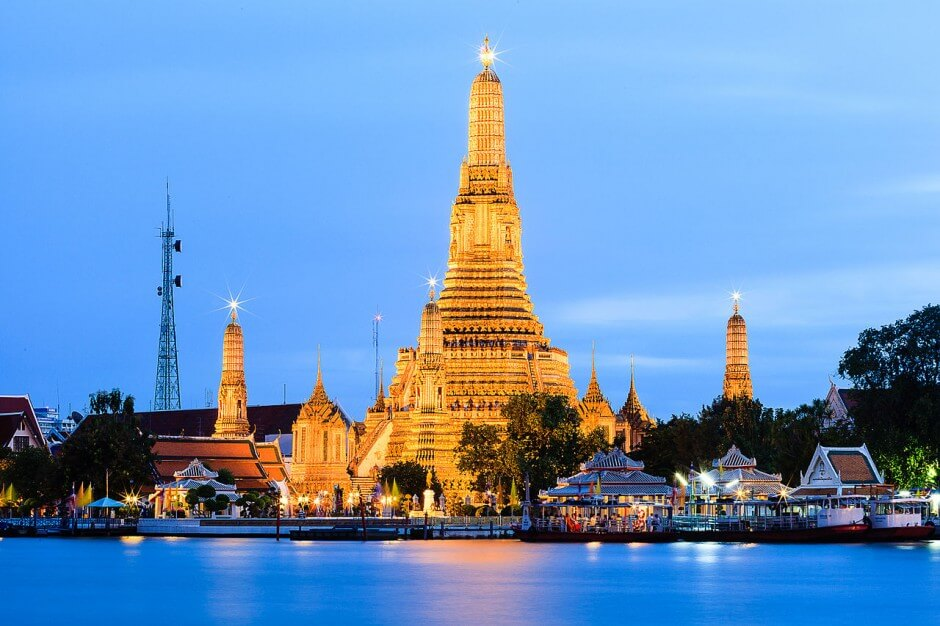
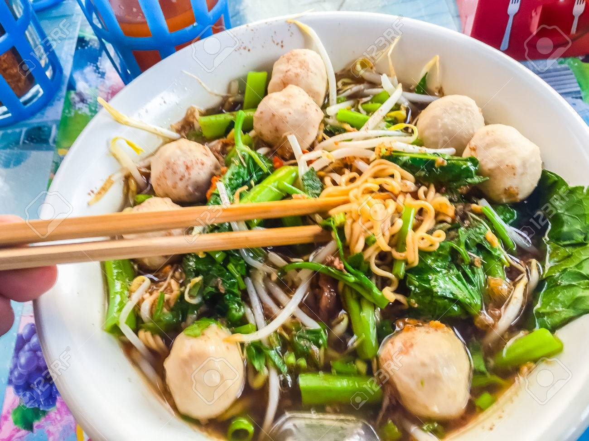

Que visiter ?
Les temples (Wat)
Wat Rong Khun, le temple blanc

Comme vous pouvez le constater sur l'image ci-dessus, ce temple est entièrement blanc.
Initialement, ce temple devait être détruit car la municipalité de Chiang Rai
n'avait pas assez de fonds pour l'opération. Il en sera autrement, car l'artiste
thailandais Chalermchai Kositpipat s'engagera à le restaurer entièrement
d'ici 2008. Malheureusement, suite à un tremblement de terre en 2014, le bâtiment
est endommagé et devra être détruit par son créateur par raison de sécurité.
Finalement, les dégats sont assez limités et Chalermchai Kositpipat pourra reprendre
son oeuvre.
A l'heure actuelle, le temple est ouvert aux visiteurs
Wat Chai Watthanaram

Le Wat Chai Watthanaram (aussi appelé grand Abbentak) est le temple le plus célèbre
d'Ayutthaya, la fameuse
ville historique thailandaise. Désormais en ruines, il fait partie du paysage de la cité antique, aux
côtés
des figuiers des banians et des statues se faisant absorber par la végétation.
A l'heure actuelle, le site antique est ouvert aux visiteurs

Wat Arun

Enfin, voici Wat Arun, situé à l'ouest de la capitale Bangkok. Son nom complet est
(retenez bien votre souffle) Wat Arunratchawararam Ratchaworamahavihara. Le temple
est très majestueux et magnifique de nuit, comme vous pourrez en juger sur cette image.
A l'heure actuelle, le temple est ouvert aux visiteurs
La cuisine thailandaise
Le Kuai Tiao
